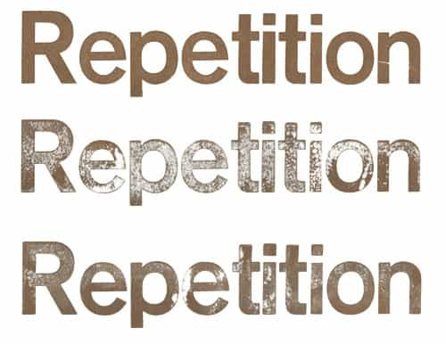
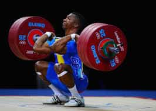

< < < Back
3 Ways High-Rep Lifting Can Improve Your Routine – Return Of Kings
In general, I am one to separate exercises done with high repetition and low weights from those done for maximal strength (high weights and low reps). This is mainly for two reasons: The first is because, when training novices don’t know proper form, I prefer to have these people reduce their repetitions to avoid risk of injury. The second reason, which I apply both to trainees and myself, is simply due to the fact that most people have jobs, school, family or some combination of all three of these, they are not capable of spending multiple hours a day in training.
With all of that being said, there is a place for increasing repetitions of in your arsenal of weightlifting knowledge and tricks. More specifically, there are three reasons that I am aware of, and if there are any more, do inform me:
1. Increasing Muscular Stamina
This is the use of increasing repetitions that you are most likely familiar with: doing more repetitions to increase your capability of doing even more repetitions. To be more accurate, increasing the amount of repetitions done will cause a build-up of lactic acid that the body will gradually become more tolerant to. This, combined with the build-up of “slow-burning” red oxidative muscles (As discussed in a previous article), will increase muscular endurance—which is to say, the amount of time that the muscle being used can be exerted to some degree. Increasing muscular endurance will increase the amount of time that any muscular exertion will last, from the lightest exertion to the maximum.

To accomplish this, you can use weights, but I find that doing bodyweight exercises like push-ups and bridges, as well as martial arts practice, works sufficiently for purposes of muscular endurance. However, weights can be used in high repetitions for purposes of strength and mass training, and this is where the odd-seeming title comes from:
2. “Greasing The Groove”
Greasing the groove is, essentially, doing repeated repetitions of lifts to increase strength in the long term. In the words of Pavel Tsatsouline, “As your grandmother should have told you, if you want to increase your ability to do something, you ought to do a lot of that.” The mechanism of this can be done exactly like the first subheading, but I think you’ll find that doing multiple sets of your one-rep maximum weight is going to result in, at best, rapidly deteriorating form and crippling injury at worst. You could decrease the amount of weight done, but that sort of defeats the purpose of building pure strength, which “greasing the groove” can do (increasing and decreasing weight will be discussed in the next and final subheading).
Greasing the groove is a variant technique that you can do to increase the amount of repetitions of your “one rep maximum” (and yes, I understand the paradox of that statement), and it is a technique that actual professional weightlifters use—both Olympic style and powerlifting style.
This technique involves doing a high-weight low rep routine as is typical for strength training, but increasing the number of sets, rather than the amount of repetitions within sets. To begin, get up fairly early in the morning, and after getting some breakfast in your stomach, do a few heavy lifts—no more than 2-3 sets of 2-3 reps. Then go relax for a bit, and when you’re up to it, do a few more lifts—again a few sets of 1-2 reps. Then eat lunch, wait a few more hours, and then—you guessed it—do a few more lifts. And that is all. As you can see, this routine organizes itself very well around the eating of three square meals a day; I’m not really a fan of that “grazing cow, six meals a day” stuff.
Thus, throughout the day, you will have done 18-24 repetitions of your one rep maximum, or a weight pretty close to it. And that’s nothing to sneeze at. The problem with this method is, of course, that you need to set aside your whole day to utilize it, and this is not practical for most people. Still, as it is a legitimate technique utilized by people whose trade it is to lift heavy things over their head, it is worth knowing. Perhaps you can do a truncated version of it—do a few sets, take a break for 10-20 minutes, and then another set to call it a day.

3. Increase Size And Strength Through Gradual Decreases
While this technique is hindered by a lack of a catchy name, it is a useful one for those who want to build both strength and a statuesque physique: Referencing the works of Pavel Tsatsouline again, his Power to the People book refers to incidences of Spetsnaz commanders in Afghanistan having so-called “Hollywood Units” of hulking, chiseled muscle men to satisfy the inspectors from Moscow. These men trained to be both big and physically capable by—again—increasing their repetitions. But in a different way then the second subheading here:
Begin with one set of your one rep maximum, with no more than 2-3 reps. Then drop 5 pounds and do another set of 2-3 reps. Then drop another 5 pounds. And another, and so on and so forth. You can literally do this exercise until you’re just lifting the bar. With this technique, you will be training your one rep max, as well as doing a massive amount of repetitions, developing both size and strength.
The downside to this technique is, again, that it basically kills your entire day. But if it was good enough to satisfy Moscow Center, it should be good enough for you should you choose to use it.
In conclusion, I must admit I only do the first of these techniques for bodyweight exercises. However, as numerous professional lifters swear by these tactics, and they require literally no training once you’ve learned proper form and technique, you might want to try them out.
Read More: How To Train Your Body For Strength Versus Endurance